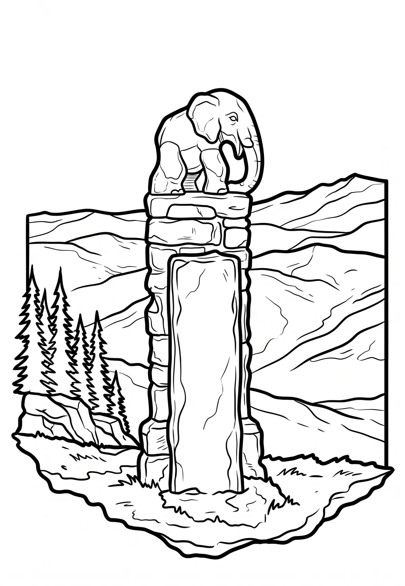

Králický Sněžník
Pardubický kraj · 1424 m n. m.

přírodní památka · #036
Králický Sněžník (polsky Śnieżnik, německy Glatzer Schneeberg nebo Grulicher Schneeberg) je nejvyšší vrchol (1423 m) stejnojmenného pohoří, které je součástí Krkonošsko-jesenické subprovincie. Vrchol leží na česko-polské hranici a je nejvyšším bodem okresu Ústí nad Orlicí a celého Pardubického kraje.